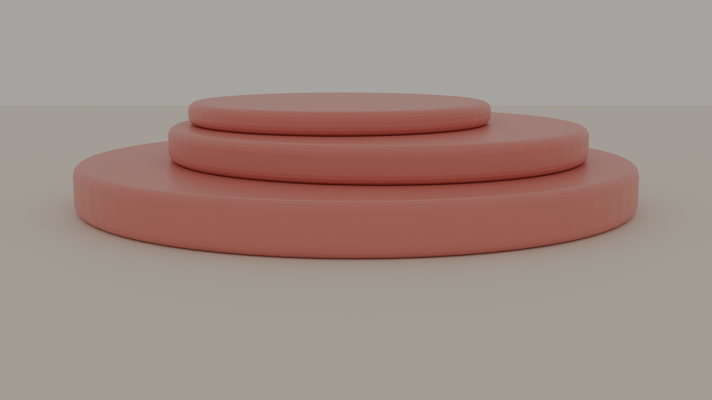
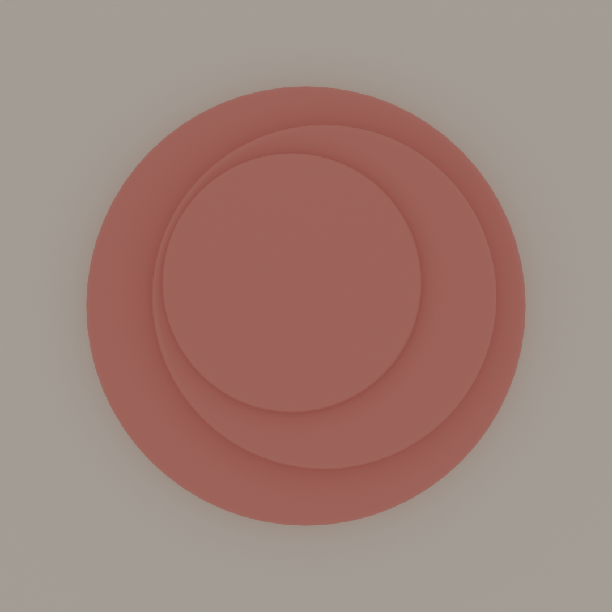

藝大デザインの感性とプログラミングを交差させた、3層構造のオブジェクト。AIエージェント実装で日常的に書いているPythonの延長線で、Blenderから直接3Dプリント可能なメッシュを生成。


「重ね（kasane）」は、平安時代の女性が着物を重ね着して色彩を表現した日本の伝統的美意識から着想を得た。和歌や絵巻物に登場する「重ね色」が示すように、日本人は古来から「重なり」によって深さを表現してきた。
本作品は、その美意識をプロダクトデザインで再解釈したもの。3層の円盤を意図的にずらして配置することで、上から見たときに 月の満ち欠けや 雪の降り重なりを思わせる微細な「ズレ」が生まれる。
制作プロセスは、藝大デザイン科で培った構成感覚と、AIエージェント実装で日常的に書いているPythonの両方を活用した。Blender Pythonでオブジェクトをパラメトリックに生成し、寸法・材質・配置を全て数値で制御。これにより「藝大の感性」と「プログラマブルなデザイン」が一つの作品の中で結実する。
「重ね」のリサーチ。古典文献・絵画から色彩構成を抽出。
Blender Python で円盤の寸法・配置を数値で定義。
Blender Cycles で 3 視点の高品質画像を生成。
STL を Creality Print でスライス、PLA でプリント。
Blender 5.0 / Python API でパラメトリック生成
Cycles レンダラ / 64 samples / 1920×1080
Creality K1 / 0.2mm レイヤー / PLA 朱色
Gemini Nano Banana Pro → Tripo3D → Blender → Slicer の自動化パイプライン